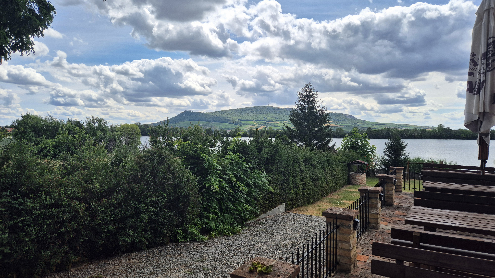
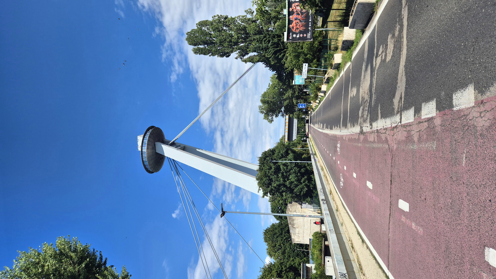
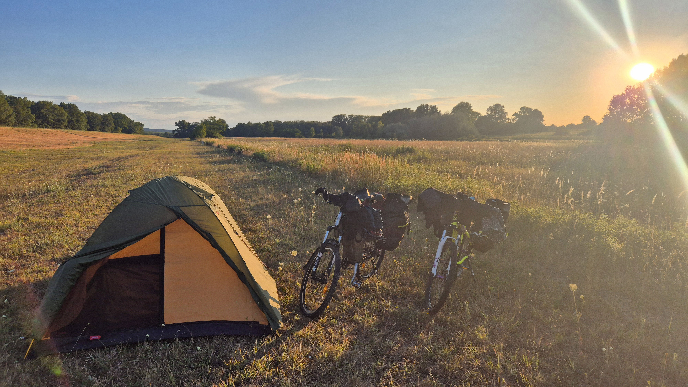

Denní zápisky z cesty na kole z Bystřice nad Pernštejnem až do Istanbulu.
Deník
Zápisky z cesty
Den 1
Bystřice → Brno (Lesná)
První den expedice začal ještě zastávkou na úřadu práce v Bystřici. Nakonec se ale ukázalo, že registrace není potřeba, protože už mám domluvenou brigádu. Pak už jsme konečně vyrazili.
Trasa vedla z Bystřice přes Štěpánov a Nedvědici. V místní kavárně jsme si dali kávu se zákuskem – první pořádnou pauzu na cestě. Pokračovali jsme podél řeky Svratky směrem na Předklášteří, kde přišla na řadu první zmrzlina výpravy. Dostala hodnocení 8 z 10. Ty dva body jsem si schválně nechal do rezervy, kdyby nás po cestě čekala ještě lepší.
Z Tišnova jsme pokračovali přes Moravskou Knínici a Kuřim až do České u Brna. Cestou jsme se zastavili v Decathlonu, kde jsme dokoupili vybavení, které se před odjezdem nestihlo pořídit – cyklistický dres, kraťasy, mazání na řetěz, světla a další drobnosti.
Překvapivě se celý den jelo velmi dobře. Nohy nebolely a forma byla lepší, než jsme čekali. Nejtěžší úsek ale přišel úplně na závěr. Výjezd na Lesnou byl pořádný kopec a místy jsem musel kolo tlačit.
Po příjezdu nás čekala ještě poslední zkouška – dostat naložená kola do bytu. Nakonec jsme je vytáhli výtahem, vysprchovali se a vyrazili na zaslouženou večeři. Já jsem si dal burger, Nikola pizzu.
První den je za námi. Zítra máme v plánu první opravdu dlouhou etapu a chtěli bychom poprvé překonat hranici 100 kilometrů za den.
Den 2
Brno → Svätý Ján (Slovensko)
Druhý den jsme vyrazili z Brna něco po osmé ráno. Nejdřív jsme se propletli městem po cyklostezkách, které nás mile překvapily – průjezd Brnem byl nakonec mnohem příjemnější, než jsme čekali.
Ještě před odjezdem na jih jsme si dali ranní kávu a zastavili se v cykloobchodě, kde jsme dokoupili dva náhradní řetězy. Pak už následoval dlouhý přesun směrem k rakouským hranicím.
V Židlochovicích přišla první zmrzlina dne. Oproti včerejšku tentokrát jen 6 z 10. Nebyla špatná, ale na vítěze výpravy rozhodně zatím nestačí.
Přes velké horko jsme pokračovali dál na jih. Cestou se znovu ukázalo, že Mapy.cz občas umí překvapit. Místy nás vedly zbytečně složitě jen po cyklostezkách, přestože by se dalo jet jednodušeji po silnici.
Od Staroviček jsme přejeli kolem Novomlýnských nádrží, které nás nijak zvlášť nenadchly. Lednici i Břeclav jsme naopak projeli téměř bez zastavení. V Břeclavi jsme jen rychle nakoupili zásoby, protože ve městě bylo opravdu hodně lidí a chtěli jsme co nejdřív pokračovat.
Za Břeclaví už se začala ozývat únava. Kvůli bolesti zadku jsem si vzal dva Brufeny a šlapal dál.
Velkým překvapením dne bylo překročení hranic do Rakouska. Rozdíl v kvalitě silnic byl okamžitě znát – jako by se všechno posunulo o deset úrovní výš. Dvacet kilometrů v Rakousku byla radost jet.
Večer jsme dorazili na Slovensko, kde jsme našli klidné místo na přespání u rybníka, který zřejmě využívají místní rybáři. Počkali jsme, až se setmí, postavili stan a druhý den expedice tím skončil.

Den 3
Svätý Ján → Šamorín
Ráno jsme vyrazili krátce po osmé. Poprvé jsem neměl zdržení a Nikola na mě nemusela čekat, i když se zdálo, že už začínala být trochu nervózní. Po noci ve stanu jsem se probudil celý ztuhlý. Bolel mě zadek, zápěstí a chvíli trvalo, než jsem se rozhýbal. Nikola na tom ale byla výrazně lépe.
Ze začátku jsme se motali po cyklostezkách směrem na Malacky. Hned ráno mě potkala první drobná smůla – v obchodě jsem zapomněl cyklistickou rukavici. Když jsem si toho všiml, musel jsem se asi tři kilometry vracet. Aspoň malý bonus do denního nájezdu.
V Malackách jsme si dali dobrou kávu a Nikola mezitím řešila klasický cyklistický problém – odřené sedací partie. To je detail, který prý nemám moc rozmazávat.
Pak jsme pokračovali směrem na Devín. Cyklostezka byla příjemná, i když nás na chvíli vedla kolem skládky. Samotný Devín ale stál za to. Dorazili jsme právě na oběd, prošli si hrad a užili si výhled na soutok Moravy a Dunaje. Tím vlastně začala další velká etapa naší cesty – odteď nás bude Dunaj provázet ještě hodně dlouho.
Bratislavou jsme projeli bez větších problémů. Přes most jsme přejeli na druhý břeh, kde bylo mnohem víc zeleně a jelo se příjemněji. Přejezdy přes mosty měly svoje kouzlo a město nás mile překvapilo.
Ještě jsme se zastavili v obchodním centru doplnit zásoby na další den a odměnili se nanukem. Pak už jsme pokračovali dál po dlouhé protipovodňové hrázi. Kilometry ubíhaly téměř po rovině, s výhledy na krajinu po obou stranách.
Večer jsme dorazili k vodnímu dílu Gabčíkovo, kde jsme našli místo na přespání. Postavili jsme stan, najedli se a šli brzy spát, abychom byli připravení na další den.

Den 4
Šamorín → Moča
Čtvrtý den začal dost ztuha. Probudil jsem se úplně rozlámaný, bolela mě hlavně stehna a ztuhlou jsem měl drtivou většinu kloubů. Po pořádné snídani přišla ještě jedna premiéra celé výpravy – první ranní sraní v lese.
Asi za pět kilometrů mělo být golfové hřiště, kde jsme si chtěli dát kávu a dobít telefony. Jenže jsme ho nějak přejeli. Místo toho jsme zastavili v malé vesnici v podniku jménem Retro Presso. Majitel byl trochu překvapený, že mluvíme česky, a tehdy nám došlo, že jsme na jihu Slovenska, kde většina místních mluví maďarsky. Káva byla výborná a od obsluhy jsme dostali i vodu na cestu.
Poté jsme dorazili k vodnímu dílu Gabčíkovo. Prošli jsme si informační centrum, viděli film o celé stavbě a o tom, jak funguje, a měli jsme štěstí – právě připlouvala nákladní loď. Mohli jsme tak sledovat plavební komory v provozu. Zavření vrat bylo působivé, ale pak už následovalo patnáct minut pomalého napouštění vody, což bylo přece jen o něco méně akční. Takže jsme asi po dvou minutách pokračovali dál.
Tušili jsme, že přijde bouřka, ale i tak nás docela zaskočila. Začali jsme hledat místo, kam bychom mohli zalézt pod střechu. Přijeli jsme ke dvěma samotám uprostřed polí a nejdřív stáli pod stromy. Když se ale opravdu rozpršelo, přelezli jsme zamčenou bránu i přes výstrahu „monitorováno kamerami“.
Seděli jsme pod pergolou jen pár minut, když Šikůvka najednou řekla: „Hele… tamhle sedí vlčák.“ Tak jsme se takticky vzdálili zpátky za bránu. A co myslíte? Nechal tam někdo rukavice? I když se pes zdál docela přátelský, rozhodl jsem se mu je tam nechat.
V Komárně jsme měli výborný kebab a nakoupili večeři i snídani. Protože rukavice zůstaly u pejska, zamířili jsme také do cykloobchodu. Nejenže jsem si koupil nové, krásně červené cyklistické rukavice, které jsou mnohem pohodlnější než ty původní, ale v servisu mi také seřídili zadní brzdu, která konečně přestala pískat. Jako bonus si nás vyfotili na svůj Facebook, protože si prý fotí všechny cyklisty ze zahraničí.
Po přeháňce jsme pokračovali dál. Většinu dne jsme jeli po dlouhé protipovodňové hrázi vybudované společně s vodním dílem Gabčíkovo. Čekaly nás další dlouhé kilometry téměř po rovině.
Cestou jsme narazili také na pozůstatky římského tábora z prvního století před naším letopočtem.
Na noc jsme zůstali schovaní za protipovodňovou hrází. Díky tomu, že se její okolí pravidelně udržuje, jsme našli parádní místo na spaní.

Den 5
Moča → Budapešť
Kdo maže, ten jede. To platí skoro u všech sportů, ale přijde mi, že u dálkové cyklistiky to platí nejvíc. Nejde jen o řetěz. Stejnou péči potřebují i sedací partie. Ráno přichází vrstva vazelíny, během dne několik dalších podle potřeby a večer hygienické ubrousky se Sudocremem. Není to zrovna romantická stránka cyklistiky, ale bez ní by podobná cesta dlouho nevydržela.
Probouzím se stejně jako předchozí dny – celý ztuhlý a bolí mě snad všechno. Jakmile se to jednou změní, určitě to bude stát za zmínku.
Z místa na spaní jsme pokračovali po protipovodňové hrázi až do Štúrova. Tam na nás čekala příjemná zastávka v AlzaBoxu, kde jsem si vyzvedl novou powerbanku a malý přenosný reproduktor. Napadlo mě, jak moc by se podobná služba hodila během mé dřívější Stezky Českem. Tehdy mi musel táta posílat vybavení na poštu. Dnes stačí otevřít box a pokračovat dál.
Přes most jsme přejeli do Maďarska. Jestli jsem si na jihu Slovenska občas připadal ztracený kvůli maďarštině, tady už nerozumím opravdu vůbec ničemu.
Musím ale zároveň napravit jednu křivdu vůči Mapám.cz. Přišel jsem na to, že mají různé režimy pro cyklistiku, a já měl celou dobu nastavenou silniční cykloturistiku. Škoda, že jsem si toho všiml až v Maďarsku, kde Mapy.cz začínají připomínat Wikipedii. Trasy čerpají z OpenStreetMap a každý si tam může namalovat vlastní cestu čárou, kterou chce. Kdybych ještě někdy jel na kole po Česku, určitě se mi tahle znalost bude hodit.
Dnešní etapa nabídla také jeden z mála větších kopců v Maďarsku. Vyšlapali jsme přibližně čtyři sta výškových metrů a hned je zase sjeli dolů. Část cesty vedla po poměrně frekventovaných silnicích, ale všechno jsme zvládli bez problémů.
Do Budapešti jsme dorazili odpoledne. Překvapilo nás, jak dobře se po městě jezdí na kole. Cyklistických pruhů je tu spousta a průjezd centrem byl mnohem příjemnější, než jsme čekali. Cestou jsme obdivovali také impozantní budovu maďarského parlamentu.